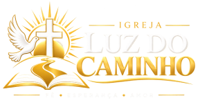

Conheça a história e a missão da Igreja Luz do Caminho.
A Igreja Luz do Caminho foi fundada em 2001, com o propósito de compartilhar a Palavra de Deus, fortalecer a fé e acolher pessoas por meio do amor cristão.
Ao longo de sua caminhada, a igreja busca construir uma comunidade unida, baseada na fé, na esperança, na solidariedade e no cuidado com o próximo.
Nossa igreja é um espaço de comunhão, oração, aprendizado e crescimento espiritual para pessoas e famílias.
Anunciar o Evangelho, promover o amor ao próximo e contribuir para o fortalecimento espiritual e social da comunidade.
Ser uma igreja acolhedora, comprometida com a fé, a transformação de vidas e a construção de uma comunidade mais solidária.
Fé, amor, respeito, união, solidariedade, honestidade, esperança e compromisso com os ensinamentos de Jesus Cristo.
Acreditamos que a igreja vai além de suas paredes. Por isso, incentivamos a comunhão entre os membros, os encontros de oração, as atividades para jovens e as ações sociais que ajudam quem mais precisa.
Queremos caminhar juntos, fortalecendo a fé e levando uma mensagem de esperança a toda a comunidade.